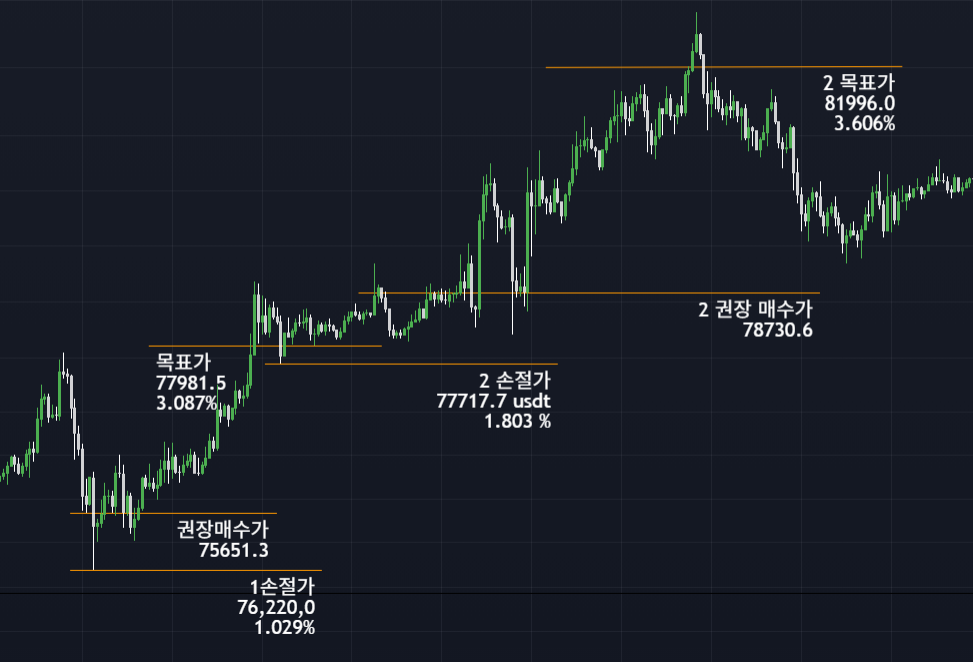

Research Initiative
금융시장 데이터의 반복적인 움직임과 가격 구조를 연구하기 시작했습니다. 기존 투자 방식의 한계를 분석하며 객관적인 진입 기준을 만들기 위한 연구를 시작했습니다.
Recommended Purchase Price System
RPP 소개 보기 ↓RPP System은 시장 데이터를 분석하여 투자자가 참고할 수 있는 권장 매수가를 계산하는 분석 시스템입니다.
투자 금액에 맞는 RPP System 활용 방법을 제공합니다.
분석 기간과 시장 흐름을 비교하여 참고할 수 있습니다.
시장 데이터를 분석하여 권장 진입 가격을 제공합니다.
리스크를 관리할 수 있도록 손절 기준을 제시합니다.
목표 수익 구간을 데이터 기반으로 제공합니다.
권장 매수가와 목표가를 기준으로 예상 수익률을 확인할 수 있습니다.
많은 투자자는 공포와 욕심으로 매수와 매도를 결정합니다.
언제 매수하고 언제 손절해야 하는지 객관적인 기준을 찾기 어렵습니다.
데이터와 패턴을 분석하여 투자 판단에 참고할 수 있는 기준을 제공합니다.
실제 RPP System 분석 예시입니다. 권장 매수가(RPP), 손절가, 목표가 및 기대 수익률을 직관적으로 확인할 수 있습니다.
현재가76,420.0 USDT
권장 매수가75,651.3 USDT
손절가76,220.0 USDT
손절 비율1.029%
목표가77,981.5 USDT
기대 수익률3.087%
현재가77,917.7 USDT
권장 매수가78,730.6 USDT
손절가77,717.7 USDT
손절 비율1.803%
목표가81,996.0 USDT
기대 수익률3.606%
아래 이미지는 RPP System이 실제 차트에 분석 결과를 표시한 예시입니다. 권장 매수가(RPP), 손절가, 목표가, 기대 수익률을 하나의 화면에서 직관적으로 확인할 수 있습니다.

시장 분석을 통해 산출된 권장 진입 가격입니다.
리스크 관리를 위한 기준 가격을 제공합니다.
분석 결과를 기반으로 설정한 목표 가격입니다.
권장 매수가 대비 목표가까지의 예상 수익률을 제공합니다.
RPP System의 분석 결과는 단순한 가격 예측이 아닌, 시장 사이클과 캔들 구조, 가격 흐름 분석을 기반으로 투자 판단에 참고할 수 있는 기준을 제공합니다.
RPP System은 고정된 분석 기간을 적용하지 않습니다. 시장 상황과 캔들 구조, 변동성에 따라 분석 기간을 유동적으로 설정합니다.
RPP 분석은 다음 요소를 종합적으로 고려합니다.
단기 분석에서는 시장 변동성이 증가할 수 있으며, 필요에 따라 레버리지를 활용한 자본 효율화가 가능합니다.
단, 레버리지 활용 시 변동 위험 또한 증가하기 때문에 적절한 비율 설정과 리스크 관리가 중요합니다.
RPP System은 특정 가격의 상승 또는 수익을 보장하는 시스템이 아닙니다. 시장 데이터를 기반으로 투자 판단에 참고할 수 있는 분석 기준과 리스크 관리 방향을 제공합니다.
RPP System은 단순히 가격을 예측하는 것이 아니라, 시장 데이터를 분석하여 투자 판단에 참고할 수 있는 기준을 제공합니다.
가격, 거래량 등 다양한 시장 데이터를 분석합니다.
시장 흐름과 반복되는 패턴을 분석합니다.
분석 결과를 바탕으로 권장 매수가를 산출합니다.
권장 매수가, 리스크, 목표가, 기대 수익률을 제공합니다.
RPP System은 단기간에 개발된 프로젝트가 아닙니다. 실제 시장 데이터를 지속적으로 연구하고 분석하며, 여러 차례의 검증과 개선 과정을 거쳐 구축된 분석 시스템입니다.
금융시장 데이터의 반복적인 움직임과 가격 구조를 연구하기 시작했습니다. 기존 투자 방식의 한계를 분석하며 객관적인 진입 기준을 만들기 위한 연구를 시작했습니다.
다양한 시장 환경에서 가격 패턴과 시장 사이클을 비교 분석하였으며, 반복적으로 나타나는 구조를 검증하는 연구를 진행했습니다.
연구 결과를 바탕으로 RPP(Recommended Purchase Price) 계산 로직을 설계하였으며, 권장 매수가, 손절가, 목표가 및 기대 수익률을 하나의 분석 체계로 통합했습니다.
실제 시장 데이터를 지속적으로 분석하며 계산 방식과 분석 정확도를 개선했습니다. 다양한 시장 상황에 적용 가능하도록 시스템을 반복적으로 최적화했습니다.
RPP System의 연구 결과를 공개하고, 누구나 시스템을 이해할 수 있도록 공식 웹사이트를 구축하여 서비스를 시작했습니다.
RPP System은 단순한 가격 예측이 아닌, 투자 판단에 필요한 기준을 제공하는 것을 목표로 합니다.
시장 데이터를 분석하여 일관된 기준으로 정보를 제공합니다.
권장 매수가, 손절가, 목표가를 함께 제시하여 투자 판단을 돕습니다.
수익뿐 아니라 위험 관리도 함께 고려합니다.
암호화폐뿐 아니라 주식 등 다양한 시장에도 적용할 수 있도록 설계되었습니다.
RPP System은 시장을 단순히 예측의 대상으로 보지 않습니다. 시장 데이터를 지속적으로 관찰하고, 반복적으로 나타나는 가격 구조와 시장 흐름을 연구하여 투자 판단에 참고할 수 있는 기준을 만드는 것을 목표로 합니다.
감정보다 데이터를 우선합니다. 시장 데이터를 기반으로 일관된 분석 기준을 제공합니다.
시장에서 반복적으로 관찰되는 가격 구조와 패턴을 연구하며 분석 기준을 지속적으로 개선합니다.
수익만을 추구하기보다 손실 가능성과 위험 관리도 함께 고려합니다.
시장은 계속 변화하기 때문에 RPP System 역시 연구와 검증을 지속적으로 이어갑니다.
RPP System은 특정 투자 방식에만 국한되지 않습니다. 시장 데이터를 기반으로 분석 기준을 제공하여 다양한 투자 성향에 활용할 수 있도록 설계되었습니다.
비트코인 및 다양한 암호화폐 시장에서 진입 가격과 리스크 관리 기준을 참고하고 싶은 투자자를 위한 분석입니다.
국내외 주식 시장에서도 데이터 기반의 분석 기준을 참고하여 투자 판단에 활용할 수 있습니다.
장기적인 시장 흐름을 고려하여 분할 매수와 장기 보유 전략의 참고 자료로 활용할 수 있습니다.
단기 가격 변동에 대응하며 진입과 손절 기준을 참고하는 트레이딩 전략에 활용할 수 있습니다.
RPP System에 대해 자주 묻는 질문을 정리했습니다.
RPP(Recommended Purchase Price System)는 시장 데이터를 분석하여 투자자가 참고할 수 있는 권장 매수가와 분석 정보를 제공하는 시스템입니다.
암호화폐 시장을 중심으로 개발되었으며, 데이터 구조가 유사한 주식 등 다양한 시장에도 적용 가능하도록 연구하고 있습니다.
아닙니다. RPP는 투자 판단에 참고할 수 있는 분석 정보를 제공하며, 모든 투자에는 손실 가능성이 존재합니다.
시장 상황과 연구 결과에 따라 지속적으로 분석을 업데이트하고 개선합니다.
네. 투자 경험이 적은 사용자도 이해하기 쉽도록 분석 정보를 제공합니다.
네. RPP System은 지속적인 연구와 검증을 통해 분석 품질을 개선하고 기능을 확장할 예정입니다.
RPP System에 대한 문의는 아래 이메일로 연락해 주세요.